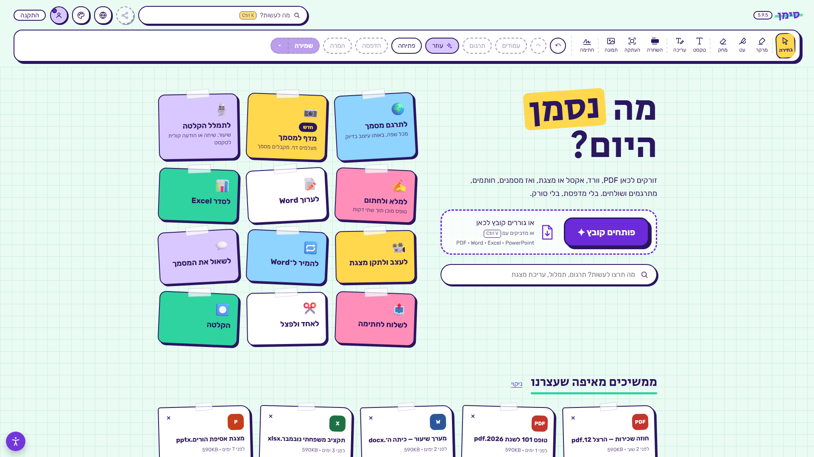
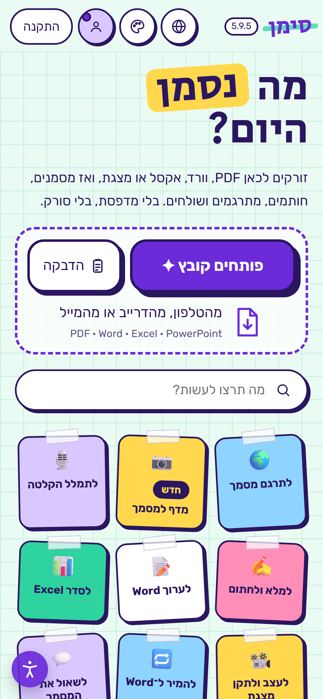

ממלאים וחותמים
סימן מוצא לבד בטופס את תיבות הסימון ואת המקומות לחתימה. חותמים באצבע או בעכבר.
היי, זה סימן 👋
פותחים PDF, וורד, אקסל או מצגת, ואז מסמנים, חותמים, מתרגמים ושולחים. בטלפון ובמחשב, והקובץ נשאר אצלכם.
🔖 בחינם כרגע, עם כל היכולות. בלי כרטיס אשראי.
דקה אחת עם העיצוב החדש: פותחים קובץ, עובדים עליו ושולחים.
כל מה שהייתם מדפיסים, סורקים או מקלידים מחדש. עכשיו עושים את זה לבד, מהטלפון או מהמחשב.
סימן מוצא לבד בטופס את תיבות הסימון ואת המקומות לחתימה. חותמים באצבע או בעכבר.
קישור אחד לכל הקבוצה, למשל להורים בכיתה. רואים מי כבר חתם ומי עוד לא.
מרקר, עט והערות. משנים מילה או מספר בתוך הקובץ, והטקסט המקורי באמת מתחלף.
עברית, אנגלית, ערבית, רוסית, צרפתית וספרדית. העיצוב נשאר, גם בוורד, באקסל ובפאוורפוינט.
שיחות, שיעורים והודעות קוליות הופכים לטקסט. ההקלטה לא יוצאת מהמכשיר.
מצלמים דף מודפס או כתוב, ומקבלים מסמך שאפשר לערוך.
שואלים שאלה ומקבלים תשובה מתוך המסמך. אפשר גם לבקש שיקריא בקול.
עורכים את הקובץ ואומרים לעוזר מה לעשות, למשל סדר את הטבלה לפי מק״ט
.
מחברים קבצים, מפצלים לפי טווחי עמודים, וממירים PDF לוורד, לאקסל או לפאוורפוינט.
בוואטסאפ, במייל או לענן, ישר מתוך סימן.
הטיוטה נשמרת לבד. חוזרים וממשיכים מאיפה שעצרתם, והקבצים האחרונים מחכים במסך הבית.


גוררים קובץ למסך הבית, או מדביקים אותו: Ctrl V במחשב, וכפתור "הדבקה" בטלפון.
לסמן, לחתום, לתרגם, לתמלל. כל כלי הוא מדבקה, ולוחצים על מה שצריך.
הקבצים האחרונים מחכים בשורה אחת במסך הבית. לחיצה, וחוזרים לעבוד.
אישור טיול לכל ההורים בקישור אחד, ורואים מי כבר חתם.
טופס מבית הספר נחתם מהטלפון, בלי להדפיס ובלי לסרוק.
חוזים, הצעות מחיר וטבלאות. ממלאים, מתקנים ושולחים.
מתמללים שיעור, מסמנים את הסיכום ושואלים את החומר.
סימן עובד ישר מהדפדפן. מי שמתקין מקבל אייקון משלו וחלון נפרד, והעדכונים מגיעים לבד.
הקובץ נשאר אצלכם. סימון, עריכה וחתימה נעשים במכשיר שלכם, וגם התמלול: ההקלטה לא יוצאת ממנו. כל הפרטים במדיניות הפרטיות.
כרגע בחינם, עם כל היכולות, בכפוף לתנאי השימוש. כשנוסיף מסלול בתשלום, נודיע מראש במייל.
PDF, וורד (גם קובצי DOC ישנים), אקסל ופאוורפוינט. וגם תמונות, קובצי שמע ווידאו. הכול נפתח באותה אפליקציה.
לא חייבים להתקין, סימן עובד ישר מהדפדפן. אחרי הפתיחה הראשונה הוא נפתח גם בלי חיבור. מי שרוצה אייקון משלו יכול להתקין בטלפון או במחשב.